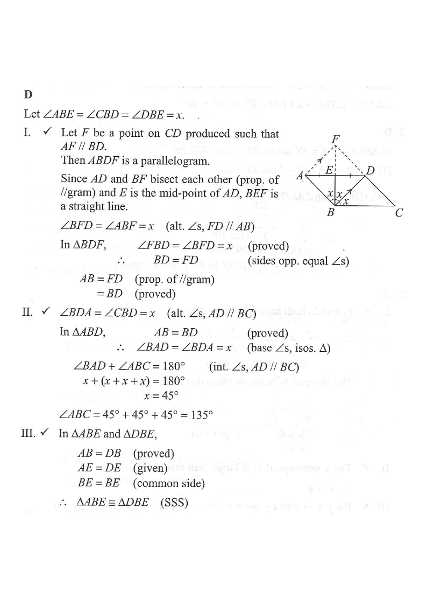

Topic: Geometry — Parallelogram, mid-point, equal angles
ABCD is a parallelogram. Let E be the mid-point of AD. If $\angle ABE = \angle CBD = \angle DBE$, which of the following are true?
A. I and II only B. I and III only C. II and III only D. I, II and III

Let $\angle ABE = \angle CBD = \angle DBE = x$.
Since $E$ is on diagonal $BD$? No — $E$ is the mid-point of $AD$, so $BE$ is a cevian inside $\triangle ABD$.
Angle sum in $\triangle ABD$:
$$\angle BAD + \angle ABD + \angle BDA = 180^\circ$$
But $\angle ABD = \angle ABE + \angle EBD = x + x = 2x$ because $E$ lies inside the angle $ABD$.
So: $\angle BAD + 2x + \angle BDA = 180^\circ$.
Prove $AB = BD$.
Consider triangles $ABE$ and $DBE$. They share side $BE$, and $AE = ED$ (given $E$ mid-point).
Also $\angle ABE = \angle DBE = x$.
However this is SSA, which is not directly congruent — apply the Sine Rule in $\triangle ABE$ and $\triangle DBE$:
$$\frac{AE}{\sin x} = \frac{AB}{\sin \angle AEB}, \qquad \frac{ED}{\sin x} = \frac{BD}{\sin \angle DEB}$$
Since $AE = ED$ and $\angle AEB = 180^\circ - \angle DEB$, we get $\sin\angle AEB = \sin\angle DEB$.
Therefore $AB = BD$. I is TRUE.
Since $AB = BD$, triangle $ABD$ is isosceles with $\angle BAD = \angle BDA$.
From Step 1: $\angle BAD + 2x + \angle BDA = 180^\circ \Rightarrow 2\angle BAD = 180^\circ - 2x$.
So $\angle BAD = 90^\circ - x$.
Now $\angle CBD = x$ and $\angle BDA = 90^\circ - x$ (alternate angles with $AD // BC$):
$$\angle ABC = \angle ABD + \angle DBC = 2x + x = 3x$$
Also $\angle ABC + \angle BAD = 180^\circ$ (co-interior angles, $AD // BC$):
$$3x + (90^\circ - x) = 180^\circ \Rightarrow 2x = 90^\circ \Rightarrow x = 45^\circ$$
Hence $\angle ABC = 3 \times 45^\circ = 135^\circ$. II is TRUE.
In $\triangle ABE$ and $\triangle DBE$: $AE = ED$ (mid-point), $BE$ common, and $\angle ABE = \angle DBE$.
But we also need $AB = BD$, which we proved true in Step 2.
With $AB = BD$, $BE$ common, $AE = ED$, triangles are congruent by SSS.
III is TRUE.
Question. \(ABCD\) is a parallelogram and \(E\) is the mid-point of \(AD\). It is given that \(AB=BD\) and \(\angle ABE=\angle DBE\). (a) Prove that \(\triangle ABE\cong\triangle DBE\). (b) If \(\angle CBD=30^{\circ}\), find \(\angle ABC\).